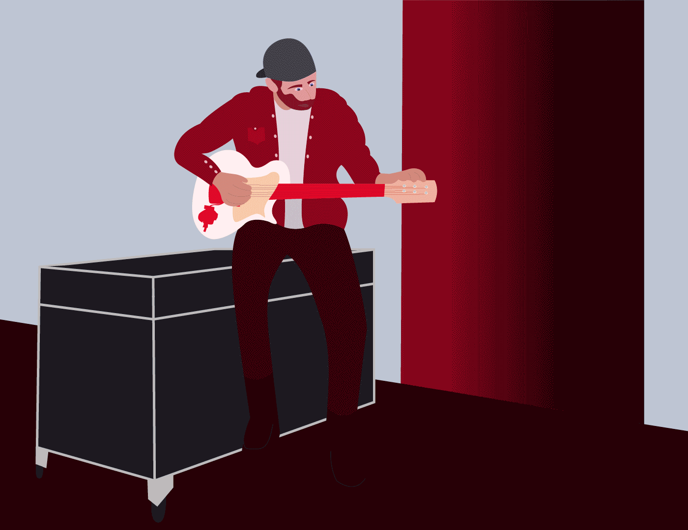
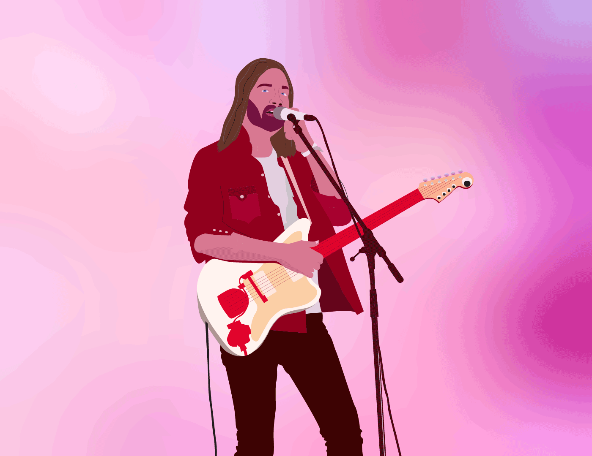

This is the section of my portfolio that is designated to showing all of my motion design work. Most of this work comes from my personal interest in motion design and from my motion design and animation class I took here at the University of Connecticut.
Tate McRae Greenlight Song Animation
For my motion design and animation class I was tasked with making a final video of anything of my choice so I chose to create a visual representation of one of my favorite songs. I used the song greenlight by Tate McRae and note that the use of this image is just for portfolio use. I used adobe illustrator and after effects to create my own shapes and assets and to animate their movements.
Tate McRae Revolving Door Song Animation
Similar to my final project that you can see above, for my motion design and animation class I was tasked with syncing music to an animation so I took a song that I really liked and I created assets for it in Adobe Illustrator and animated movement and text animation in Adobe After Effects. The use of the music by Tate McRae is for portfolio use only.
Pinball Animation
In my motion design and animation class I was tasked with creating an animation of a pinball machine to show my understanding of movement in animation. I created everything you see in Adobe Illustrator and then took those files into Adobe After Effects and animated them using keyframing. I also added sound to enhance the viewing experience and make it feel as if you are almost playing the game!
Connecticut State Park Lifeguard Reimagined Motion Poster
This is a motion graphic that I made in my motion design class that was a re-imagination of a poster that I made for the Connecticut State Park Lifeguards. I used the aspects of the poster that I made and made a small animation of the person in the poster running through the water with a surfboard.


Tame Impala Concert
For my Design Lab 2 course I was tasks with making a cohesive story through motion in GIFs so I made the story of an artist prepping for a concert and seeing one person stand out in the crown as they perform. I got this idea when I went to a concert that I loved so much that the person performing made me feel as if I was the only one there.
12 Principles of Animation
For my motion design and animation class me and a group were tasked with creating an animation that encapsulated all 12 of the principles of animation clearly. Here is my section of the video where I displayed the principles of follow through, arcs, and squash and stretch. Everything here was made in Adobe Illustrator and animation in Adobe After Effects.
Nautical Bowls Rebrand Animation
For my design lab 2 I was tasked with creating a rebrand for the smoothie bowl shop Nautical Bowls. You can see more of the content I made in my graphic design section of my portfolio but this was a short animation I made for the company using the logo I made in my rebrand.